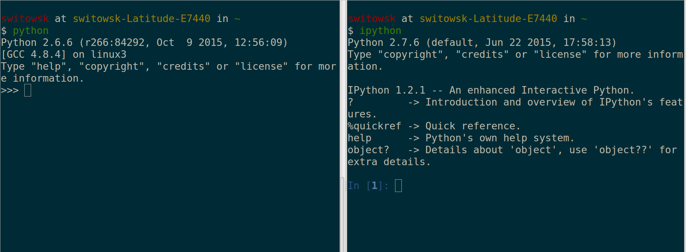

IPython
Tips & Tricks
Created by Sebastian Witowski
2 kinds of Pythonistas

What is a REPL ?
Live demo #1

Covered topics:
- TAB-completion, aka "was it string.to_i or string.to_integer ? Or maybe int(string) ?"
- function?
- function??
Live demo #2: %magic
Covered topics:
- TAB-completion, aka "was it string.to_i or string.to_integer ? Or maybe int(string) ?"
- function?
- function??